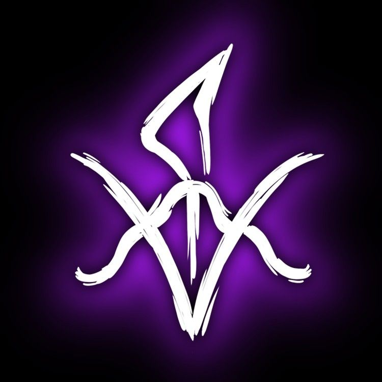

A Energia em é um recurso fundamental que
pode ser manipulada de diversas formas para realizar feitos
sobrenaturais. Ela está presente em várias manifestações, como
eletricidade, magia ou até mesmo em poderes psíquicos. A energia
pode ser usada para ataque, defesa, cura ou para manipular o
ambiente. Aqueles que controlam a energia possuem grande poder,
podendo concentrá-la em rajadas de destruição ou em formas mais
sutis, como escudos ou habilidades de suporte. O uso excessivo de
energia, no entanto, pode ter consequências graves, como
esgotamento ou perda de controle.

A Morte em é um conceito central e muitas vezes personificado como
uma força inevitável que controla o ciclo da vida e da morte.
Representa o fim da existência física, mas também pode envolver
transições para o pós-vida, com diferentes destinos dependendo do
julgamento ou das escolhas dos personagens. Além de ser uma força
destrutiva, a Morte também pode ser uma ferramenta de
transformação ou evolução, guiando almas para seus destinos
finais.
O Conhecimento em é um elemento ou habilidade que permite
manipular informações, compreender a realidade e interpretar as
leis naturais do universo. Ele é essencial para desvendar
mistérios, manipular magias, acessar conhecimentos antigos e
entender a origem e as regras que governam o jogo. Pessoas que
possuem essa habilidade são capazes de alterar a percepção da
realidade, controlar a lógica e até distorcer as leis físicas em
seu favor.
O Sangue em é um símbolo de poder, sacrifício e conexão entre os
vivos e os mortos. Ele está intimamente ligado à vida, mas também
à morte e ao sofrimento. Muitas vezes é usado em rituais, magia e
pactos, sendo um meio de invocar poderosos feitiços ou de
estabelecer vínculos entre seres sobrenaturais. O sangue pode ser
tanto uma fonte de força como uma fraqueza, com aqueles que o
controlam podendo manipular a vida e a morte, além de exercer
controle sobre outras pessoas ou criaturas através de laços
sanguíneos.
O Medo em é uma força poderosa que pode ser tanto uma fraqueza
quanto uma arma. Ele é frequentemente utilizado por entidades e
personagens como uma ferramenta para manipular, controlar ou
enfraquecer os outros. O medo pode se manifestar de diversas
formas, desde o simples pavor psicológico até distorções físicas e
mentais, afetando a percepção da realidade. Personagens que
controlam ou exploram o medo podem usar essa energia para criar
caos, paralisar inimigos ou obter poder, tornando-o uma das
emoções mais temidas e perigosas no universo.